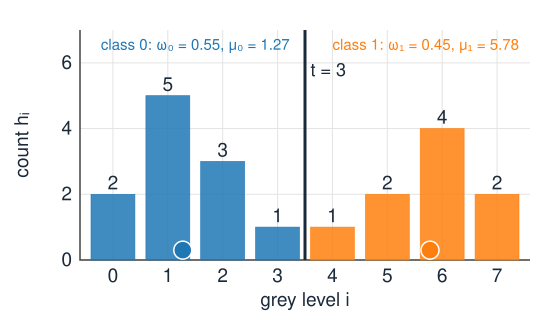
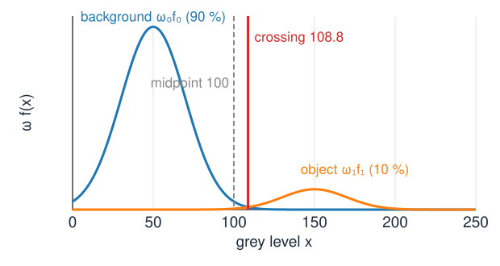

Last unit: a threshold t splits the histogram into background and object, and a good t sits in a valley. Now the computer chooses t from the histogram alone.
Otsu: make both classes as tight as possible; equivalently, push their means apart.
Isodata: two means and their midpoint, repeated; 1D k-means.
Minimum error: model the histogram as two normal distributions and put t where they cross (Bayes).
Which method is biased when one class is small or wide, and in which direction.
Briefly: the triangle and maximum-entropy methods, and three classes.
Slides titled The math give the formulas and proofs; the ideas are complete without them.
Two classes

A threshold t splits the grey levels into class 0 (background, i \le t) and class 1 (object, i > t). Each class has
a weight\omega_0, \omega_1: the fraction of pixels in it (\omega_0 = P(t), \omega_1 = 1 - \omega_0),
a mean\mu_0, \mu_1 and a variance\sigma_0^2, \sigma_1^2 of its grey levels.
Worked example (8 grey levels, 20 pixels): h = (2, 5, 3, 1, 1, 2, 4, 2), mean \mu = 3.3, variance \sigma_T^2 = 5.81. At t = 3: \omega_0 = 0.55, \mu_0 = 1.27, \mu_1 = 5.78.
Otsu: tight classes, far apart
Otsu (1979): a good split makes each class tight around its own mean.
Measure the spread within the classes: \sigma_W^2 = the weighted average of the two class variances. Choose t to make it smallest.
The total spread of all pixels, \sigma_T^2, does not depend on t. It splits into within + between: the spread of the pixels around their class mean, plus the spread of the class means around the overall mean.
So making the classes tight is the same as making the class means far apart: maximise the between-class variance\sigma_B^2 = \omega_0\omega_1(\mu_0 - \mu_1)^2.
\sigma_B^2 is large when the means are far apart and both classes are substantial: a class with 1 % of the pixels contributes little, however far away it is.
The math: within + between
With p_i the normalised histogram, class 0 = \{i \le t\}: \sigma_T^2 = \sum_i (i - \mu)^2 p_i = \sum_{k=0}^{1}\sum_{i \in k} \big((i - \mu_k) + (\mu_k - \mu)\big)^2 p_i . Expand the square. The cross term 2(\mu_k - \mu)\sum_{i \in k}(i - \mu_k)p_i vanishes, because the deviations from a class’s own mean sum to zero. What remains: \sigma_T^2 = \underbrace{\omega_0\sigma_0^2 + \omega_1\sigma_1^2}_{\sigma_W^2} + \underbrace{\omega_0(\mu_0 - \mu)^2 + \omega_1(\mu_1 - \mu)^2}_{\sigma_B^2}.\sigma_T^2 is fixed, so \arg\min_t \sigma_W^2 = \arg\max_t \sigma_B^2. With \mu = \omega_0\mu_0 + \omega_1\mu_1: \mu_0 - \mu = \omega_1(\mu_0 - \mu_1) and \mu_1 - \mu = \omega_0(\mu_1 - \mu_0), so \sigma_B^2 = \omega_0\omega_1^2(\mu_0 - \mu_1)^2 + \omega_1\omega_0^2(\mu_0 - \mu_1)^2 = \omega_0\omega_1(\mu_0 - \mu_1)^2 .
The math: one pass over the histogram
With the running sums P(t) = \sum_{i \le t} p_i and M(t) = \sum_{i \le t} i\,p_i of the last unit: \omega_0 = P, \mu_0 = M/P, \mu_1 = (\mu - M)/(1 - P), and \mu_1 - \mu_0 = \frac{\mu P - M}{P(1 - P)} \quad\Longrightarrow\quad \sigma_B^2(t) = \frac{\big(\mu\,P(t) - M(t)\big)^2}{P(t)\,\big(1 - P(t)\big)} .
Build the histogram: O(N) for N pixels. Then one pass over the L grey levels evaluates \sigma_B^2 at every t: O(L).
For 256 grey levels the search is free; even for 16-bit data it is 65 536 evaluations.
Undefined where a class is empty (P = 0 or 1).
The worked example
t
0
1
2
3
4
5
6
\omega_0
0.10
0.35
0.50
0.55
0.60
0.70
0.90
\mu_0
0.00
0.71
1.10
1.27
1.50
2.00
2.89
\mu_1
3.67
4.69
5.50
5.78
6.00
6.33
7.00
\sigma_B^2
1.21
3.60
4.84
5.02
4.86
3.94
1.52
\sigma_W^2
4.60
2.21
0.97
0.79
0.95
1.87
4.29
Every column adds up to \sigma_T^2 = 5.81 (up to rounding).
Otsu’s threshold: t^* = 3, with \sigma_B^2 = 5.02. The mask is I > 3.
Try it: Otsu by hand
Isodata: two means and their midpoint
Ridler & Calvard (1978): start with any t, then repeat
split at t and compute the two class means \mu_0, \mu_1;
move t to their midpoint(\mu_0 + \mu_1)/2;
until t stops moving.
Every pixel joins the nearer mean, then the means are recomputed: this is k-means with k = 2 in one dimension.
The worked example from t = 5.5: 4.17 \to 3.75 \to 3.53, which splits at 3, the same as Otsu.
It can stop at a different fixed point: with three groups of grey levels (levels 0, 3–4 and 7), isodata from 6.5 stops at 4.58 (split \{0, 3, 4\} vs \{7\}), while Otsu’s best split is \{0\} vs the rest. Isodata finds a local optimum; Otsu searches all t.
The math: Otsu’s optimum is an isodata fixed point
Continuous grey levels with density p(x): P' = p(t), M' = t\,p(t). Write D = \mu P - M = P(1 - P)(\mu_1 - \mu_0), so \sigma_B^2 = D^2 / (P(1 - P)) and D' = (\mu - t)\,p(t). Setting the derivative to zero (with p(t) \ne 0, D \ne 0): 2(\mu - t)\,P(1 - P) = D(1 - 2P) \;\Longrightarrow\; t = \mu - \tfrac12 (1 - 2P)(\mu_1 - \mu_0). Insert \mu = P\mu_0 + (1 - P)\mu_1: t = \frac{\mu_0 + \mu_1}{2}. Every stationary point of \sigma_B^2(t), the maximum included, is a fixed point of isodata. The converse fails: a fixed point can be a local maximum or even a minimum of \sigma_B^2.
Two classes as probabilities: Bayes
Treat the grey level x of a pixel as random. Class k has prior probability \omega_k (its share of the pixels) and a distribution f_k(x) of grey levels.
Bayes’ rule: the probability that a pixel with grey level x is object is proportional to \omega_1 f_1(x); that it is background, to \omega_0 f_0(x). “Posterior ∝ likelihood × prior.”
Decide object where \omega_1 f_1(x) > \omega_0 f_0(x): this rule makes the fewest errors.
For a threshold t: the errors are the background tail above t plus the object tail below t. Moving t trades one tail for the other; the total is smallest where the two weighted curves cross.
Where the curves cross

Background \mu_0 = 50 (90 % of the pixels), objects \mu_1 = 150 (10 %), both with \sigma = 20.
The crossing is at 108.8, not at the midpoint 100: the rarer class gets less room. Error 0.35 %, against 0.62 % at the midpoint.
Shaded: the two tails that a threshold at the crossing gets wrong.
Equal variances, equal weights: the crossing is the midpoint, as in isodata.
The math: the minimum-error threshold
The error of the rule “object if x > t”: E(t) = \omega_0 \int_t^\infty f_0(x)\,dx + \omega_1 \int_{-\infty}^t f_1(x)\,dx, \qquad E'(t) = -\omega_0 f_0(t) + \omega_1 f_1(t) = 0 . For normal f_k take logarithms: \ln\omega_0 - \ln\sigma_0 - \frac{(t - \mu_0)^2}{2\sigma_0^2} = \ln\omega_1 - \ln\sigma_1 - \frac{(t - \mu_1)^2}{2\sigma_1^2}.
Equal variances: the t^2 terms cancel, and t = \frac{\mu_0 + \mu_1}{2} + \frac{\sigma^2}{\mu_1 - \mu_0}\,\ln\frac{\omega_0}{\omega_1} . Example: 100 + \frac{400}{100}\ln 9 = 108.8.
Unequal variances: a quadratic in t with up to two roots. The wider class wins in both tails: far out on either side its density is larger.
Minimum error from the histogram
We do not know \omega_k, \mu_k, \sigma_k. Kittler & Illingworth (1986): for every candidate t,
fit a normal distribution to each side of the split (weight, mean and variance of the pixels on that side),
measure how well the two fitted curves explain the histogram,
keep the t with the best fit, and threshold there.
When the histogram really is two normal peaks, this lands near the crossing, even for unequal weights or widths. When it is not (clipped values, a long tail, three groups), the fit can go badly wrong.
The math: Kittler–Illingworth
The criterion is the average negative log-likelihood of the pixels under the fitted mixture, with each pixel assigned to its side of t: J(t) = -\sum_i p_i \ln\big(\omega_{k(i)}\, f_{k(i)}(i)\big) = \tfrac12\ln 2\pi + \tfrac12 + \sum_k \omega_k \ln\sigma_k - \sum_k \omega_k \ln\omega_k , using \sum_{i \in k} p_i (i - \mu_k)^2 = \omega_k\sigma_k^2. Dropping constants and doubling: J(t) = 1 + 2(\omega_0\ln\sigma_0 + \omega_1\ln\sigma_1) - 2(\omega_0\ln\omega_0 + \omega_1\ln\omega_1), \qquad t^* = \arg\min_t J(t). Like Otsu, one pass with running sums (now also \sum_{i \le t} i^2 p_i). A class with almost zero variance gives \ln\sigma \to -\infty: guard against empty or one-level classes.
Who is biased, and which way
Otsu and isodata use only the means. In effect they assume equal variances and similar weights.
Small object class (10 % of the pixels): Otsu moves into the larger class. On the curves above it chooses 98.5 instead of 108.8; at 3 % objects it falls to 60.5, inside the background peak.
Much wider background: Otsu again moves into the wider class.
Minimum error follows the crossing as long as the two-Gaussian model fits.
Heavy overlap: every threshold has a large error; the grey level alone cannot decide. Neighbours must help (graph cuts, day 13).
Try it: two Gaussians, six thresholds
Other criteria: triangle and maximum entropy
Triangle (Zack et al., 1977): draw a line from the histogram’s peak to the far end of its long tail; the threshold is where the histogram lies farthest below that line. Made for a unimodal histogram with a few bright object pixels (fluorescent spots), where there is no valley and Otsu fails.
Maximum entropy (Kapur et al., 1985): choose t so that the grey levels within each class are as spread out as possible (the entropies H_0 + H_1 of the two class distributions p_i/\omega_k are largest).
Another criterion, another answer: there is no single “correct” threshold. The choice is a choice of model of the histogram.
Three classes: multi-level Otsu
\sigma_B^2 = \sum_k \omega_k(\mu_k - \mu)^2 for K classes; for three, try all pairs t_1 < t_2 (about 32 000 for 256 levels).
Summary
Otsu: total variance = within + between; minimise the within-class variance \Leftrightarrow maximise \sigma_B^2 = \omega_0\omega_1(\mu_0 - \mu_1)^2. One pass over the histogram.
Isodata: t \leftarrow (\mu_0 + \mu_1)/2, repeated; 1D 2-means. Otsu’s optimum is one of its fixed points; it may stop at another.
Bayes / minimum error: decide object where \omega_1 f_1 > \omega_0 f_0; the best threshold is where the weighted densities cross. Equal variances: midpoint shifted by \frac{\sigma^2}{\mu_1 - \mu_0}\ln\frac{\omega_0}{\omega_1}.
Kittler–Illingworth fits two Gaussians at every t and keeps the best fit.
Otsu and isodata are biased into the larger or wider class; triangle for a unimodal histogram with a tail; three classes by multi-level Otsu.